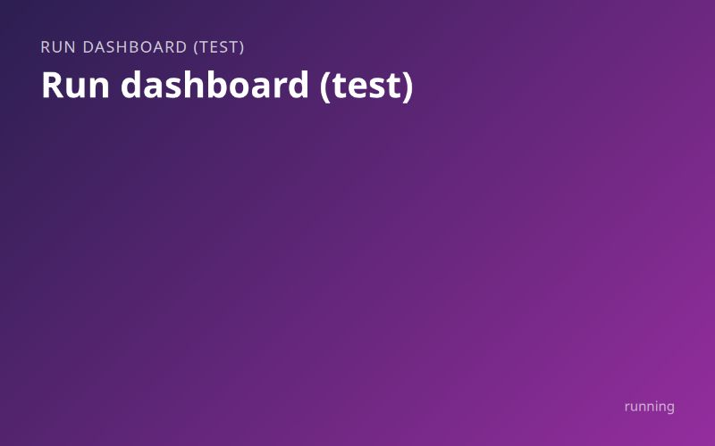
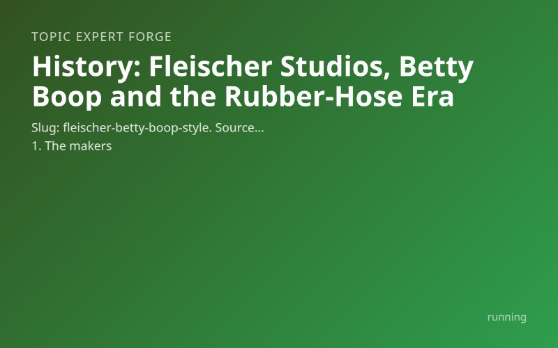
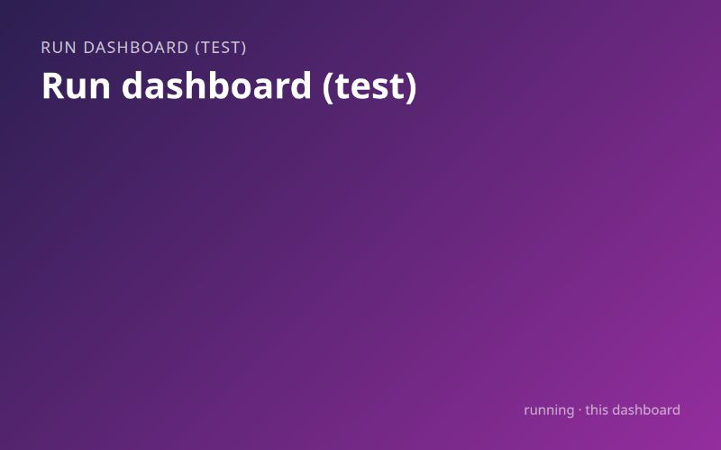

test runrunning
Run dashboard (test)
A test dashboard of runs from November 3 to 6, still gathering
- Period
- 2026-11-03..2026-11-06
5 runs started between Fri 6 Nov, 16:09 and Fri 6 Nov, 17:09.
Open in a browser tab: http://localhost:4810/api/runs/8dfb05bf-4d9f-486a-8646-f1b0e8f002e9/files/stages/build/outputs/dashboard/index.html

test runrunning
A test dashboard of runs from November 3 to 6, still gathering

test rundone
A user bible for a trip planner, stuck behind the login page

test rundone
A user bible for a fonts, visualizer and photo gallery app

running
An expert brief on rubber-hose cartoon style, still being researched
+1 more inputs

this dashboardrunning
This dashboard, built from the period you chose